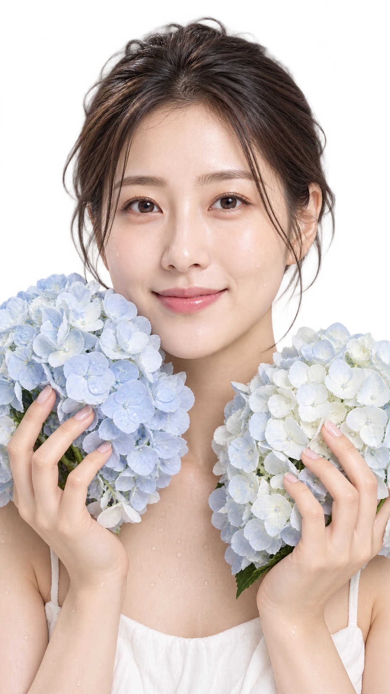
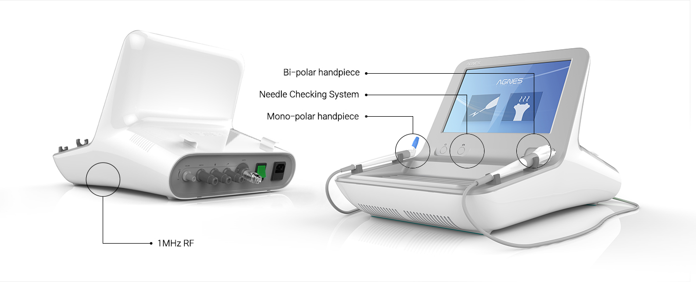
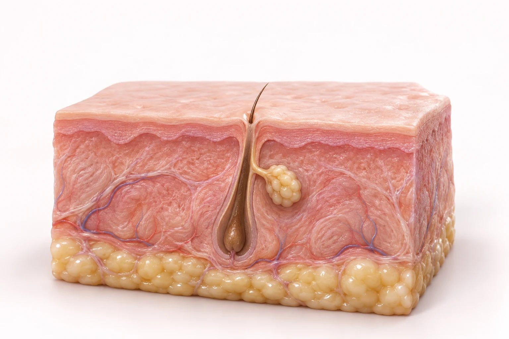

반복되는 여드름
비슷한 부위에 트러블이 되풀이된다면 염증 상태와 기존 치료 경과를 함께 살펴봅니다.

Look deeper.
아그네스는 미세 절연 니들을 이용해 목표 조직에 고주파(RF) 에너지를 전달하는 시술입니다. 여드름 치료에서는 피지선에 열을 전달하는 원리를 활용합니다. 피부 상태와 병변의 종류를 먼저 확인하고, 치료가 필요한 부위를 선택합니다.

니들의 절연 구간은 피부 표면을 보호하도록 설계되어 있습니다. 에너지가 전달되는 끝부분과 치료 범위를 살피며 의료진이 적용합니다.
니들의 종류와 적용 방식은 병변의 위치·깊이와 피부 상태에 따라 달라집니다.
비슷한 부위에 트러블이 되풀이된다면 염증 상태와 기존 치료 경과를 함께 살펴봅니다.
피지가 많다고 모두 같은 시술을 하는 것은 아닙니다. 병변의 종류에 맞는 접근이 필요합니다.
복용약, 최근 받은 시술, 피부 민감도를 확인하고 필요한 치료와 관리 순서를 정합니다.
Focused RF.
피부 구조를 먼저 확인하고, 절연 니들로 목표 지점에 에너지를 전달합니다. 아래 장면에서 단계를 선택해 원리를 확인해 보세요.

표피피지선진피겉으로 비슷해 보여도 트러블의 원인은 다를 수 있습니다. 염증의 정도와 병변의 위치를 확인해 치료 대상을 정합니다.
피부 상태에 맞는 미세 절연 니들을 적용합니다. 절연 구간과 에너지가 전달되는 끝부분을 구분해 이해할 수 있습니다.
니들 끝부분을 통해 전달된 고주파가 목표 조직에 열을 형성합니다. 치료 후에는 피부 반응과 회복 경과를 확인합니다.
Care, step by step.
시술 범위와 횟수, 회복에 필요한 시간에는 개인차가 있습니다. 일괄적인 계획보다 피부 반응을 확인하는 과정이 중요합니다.
병변과 피부 상태,
기존 치료 이력을 확인합니다.
마취와 시술 범위를 정하고
상태에 맞춰 적용합니다.
보습·자외선 차단을 챙기고
의료진 안내를 따릅니다.
회복과 치료 반응을 살펴
이후 계획을 조절합니다.
복용 중인 약, 임신 여부, 삽입형 의료기기, 최근 시술과 피부 자극 증상을 의료진에게 알려주세요. 치료 가능 여부는 상담 후 판단합니다.
일시적인 붉어짐·붓기·통증·딱지 등이 생길 수 있습니다. 직접 압출하거나 딱지를 떼지 말고, 세안·화장·운동의 재개 시점은 안내에 따라주세요. 화상·색소 변화·흉터 등의 위험도 상담 시 확인합니다.
통증이나 열감이 심해지거나 진물·물집 등 이상 증상이 있다면 병원에 문의해 주세요.
Questions?
궁금한 점을 미리 확인해 보세요.
미세 절연 니들을 통해 목표 조직에 고주파 에너지를 전달하는 시술입니다. 여드름 치료에서는 피지선에 열을 전달하는 원리를 활용하며, 적용 여부는 병변과 피부 상태를 확인한 뒤 결정합니다.
압출은 모공에 쌓인 내용물을 정리하는 과정이고, 아그네스는 니들로 고주파 에너지를 전달하는 방식입니다. 원리와 목적이 다르므로 필요한 치료와 관리의 순서를 상담합니다.
모든 트러블에 같은 치료가 필요한 것은 아닙니다. 여드름과 유사한 피부 질환, 염증의 정도, 피부 장벽 상태를 먼저 확인해야 합니다. 약물이나 다른 관리가 먼저 필요할 수도 있습니다.
한 번의 시술로 완치되거나 재발하지 않는다고 보장할 수 없습니다. 여드름에는 여러 요인이 관여하고 시술하지 않은 부위에도 병변이 생길 수 있습니다. 경과에 따라 이후 치료를 결정합니다.
따끔거림이나 열감, 통증을 느낄 수 있으며 개인차가 있습니다. 마취 방법과 범위는 상담 후 정합니다. 불편한 감각이 있다면 시술 중 바로 의료진에게 알려주세요.
병변의 수와 범위, 염증 상태, 회복 경과에 따라 다릅니다. 정해진 횟수를 일괄적으로 적용하지 않고 진료 후 계획을 안내합니다. 예약 시 예상 소요 시간을 확인해 주세요.
일시적인 붉어짐, 붓기, 통증이나 딱지 등이 생길 수 있습니다. 화상·색소 변화·흉터 등의 위험도 있습니다. 증상이 심해지거나 물집·진물 등 이상 반응이 나타나면 병원에 문의해 주세요.
복용약, 임신 여부, 삽입형 의료기기, 최근 시술과 피부 상태를 의료진에게 알려주세요. 시술 후 직접 압출하거나 딱지를 떼지 말고 보습·자외선 차단을 챙기세요. 세안·화장·운동 시점은 안내에 따라주세요.
뷰티블라썸의원은 서울 마포구 양화로 66, 메디원메디컬센터 6층·8층에 위치합니다. 접수는 6층이며 합정역 3번 출구 인근입니다. 아래 진료시간과 위치를 확인하고 상담을 예약해 주세요.
반복되는 고민,
내 피부에 맞는 답을 찾아보세요.
나에게 맞는 이벤트를 펼쳐보세요.
Beauty, with care.
피부 상태와 원하는 변화를 세심하게 살피고,
정품·정량과 충분한 설명을 진료의 기본으로 생각합니다.

피부 상태와 일상, 원하는 변화를
함께 살펴 나에게 맞는 진료 계획을 세웁니다.

정품 사용과 정량 원칙을
진료의 기본으로 생각합니다.

개개인의 자연스러운 아름다움을 존중하며,
시술 과정과 관리 방법을 충분히 설명합니다.
Find us.
평일 10:00–20:00
주말·대체공휴일 10:00–16:30
점심시간 없이 진료 · 공휴일 진료는 문의
평일 10:00–20:00
주말·대체공휴일 10:00–16:30
점심시간 없이 진료 · 공휴일 진료는 문의